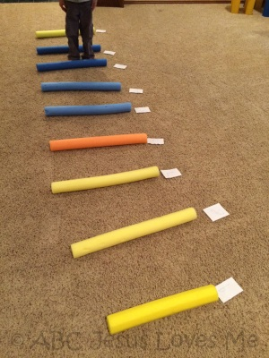
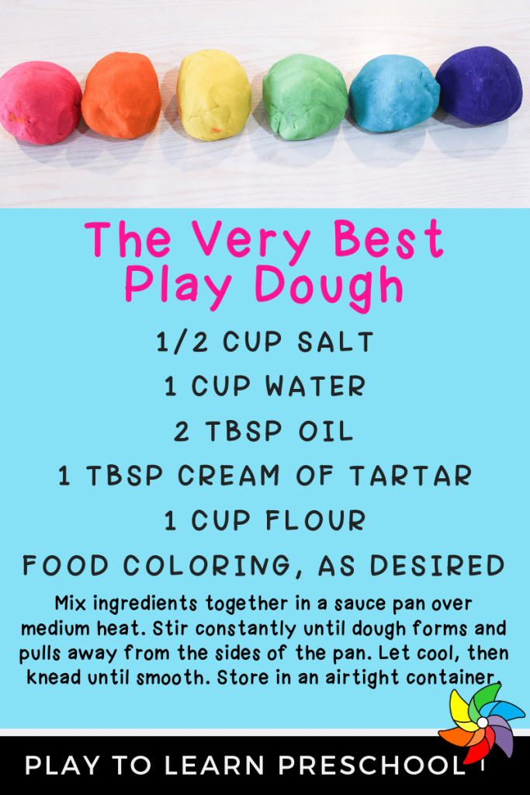
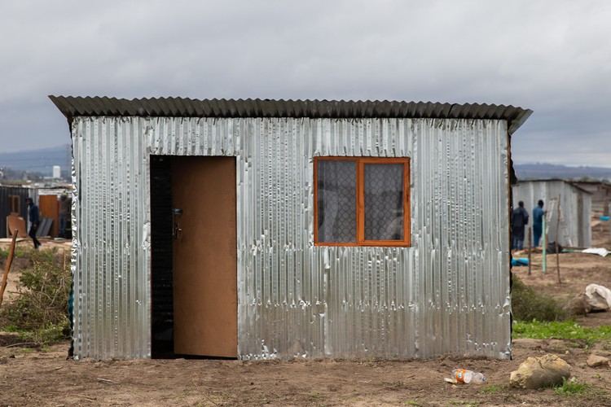
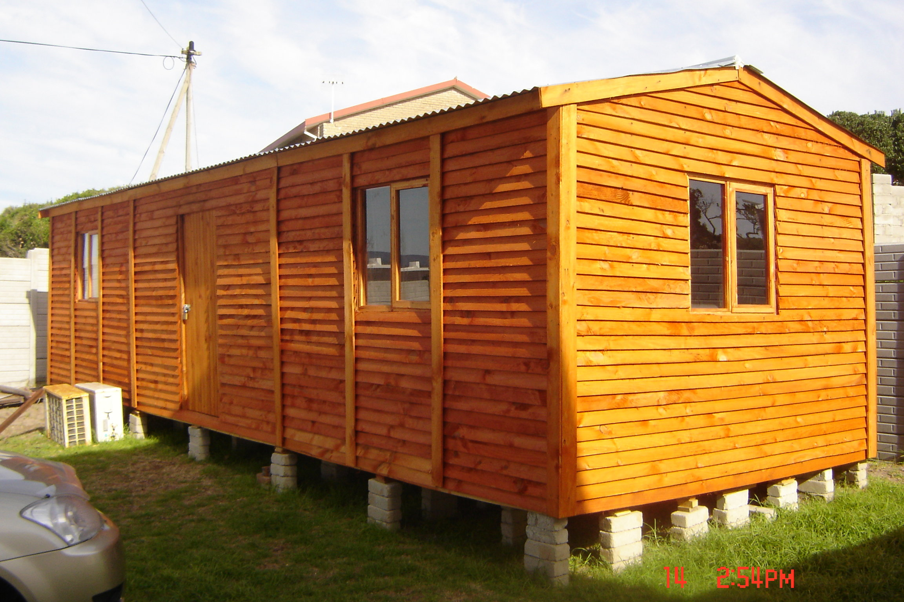
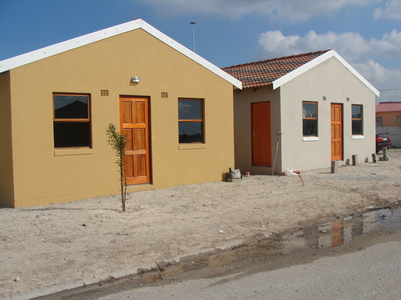
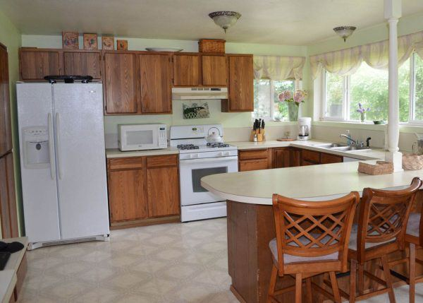
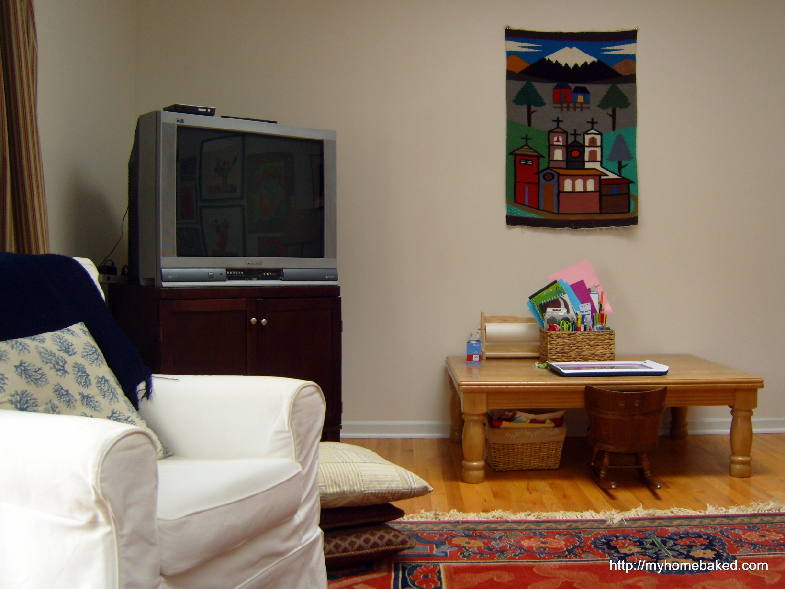
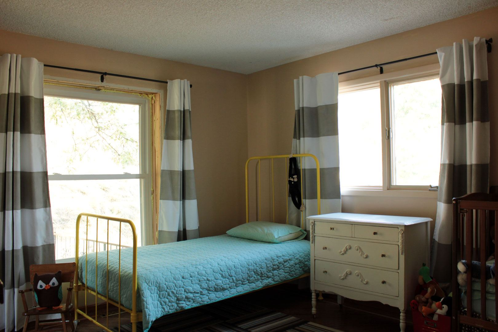
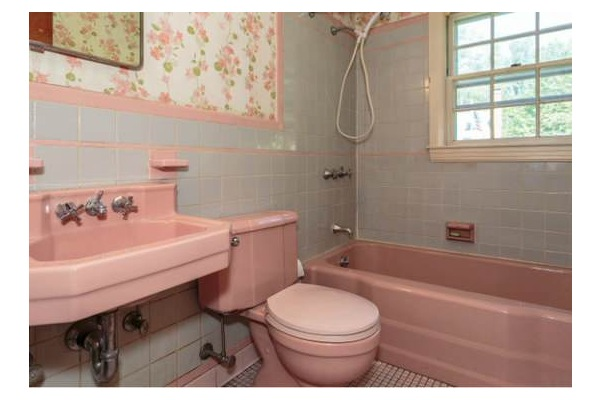
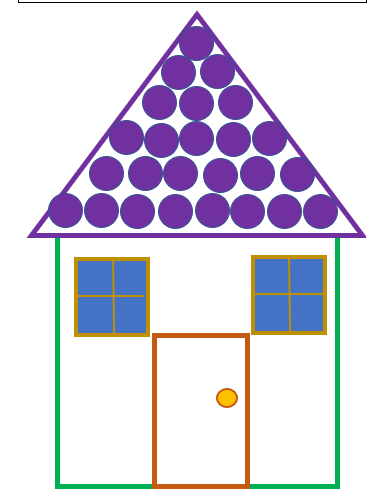

LEARNERS WITH SEVERE TO PROFOUND INTELLECTUAL DISABILITY
LESSON PLAN YEAR 2
TERM 1 & 2
CONTENT
- Lesson plan theme and topics……………………………………………………………………………….….……. Pg 2
- Assessment methods and descriptors……………………………………………………………………….………. Pg 3
- Carer’s role in the facilitation of the lesson plan theme and topic………………………………………….……...Pg 4
- General accommodations……………………………………………………………………………………….……..Pg 10
- Addendums……………………………………………………………………………………………………….……..Pg 12
Theme: Me and my environment Topic: Me and my home | ||||
Note: Be mindful that learners come from different homes and different cultural backgrounds. All these homes and households should be acknowledged, appreciated, and given the same value and respect during the lesson. The language, both verbal and nonverbal used when discussing these different homes should be handled with positivity, respect and appreciation. The LSPID team members, together with the special care centre staff, are responsible for adapting lesson plan activities, LTSM and other resources to suit the cultural environment of the area the special care centre is located in. Throughout the day, observe the learner's reaction to the different activities and try to find time to record learner’s reactions using an informal observation sheet. Your centres’ daily programme may not follow the same sequential progression as this lesson plan. There is no need to follow this plan as is. Use the lesson content and follow the daily programme you use in your centre/ school. The therapists and teachers among the outreach team members will guide and support the caregivers / teachers in planning and implementing the lesson activities. This includes assessing learners and guiding caregivers and teachers on relevant accommodation of learners, should some learners’ impairments impede their participation in the learning programme. | Resources: Learning and teaching support materials that are mentioned in the lesson plan include, but are not limited, to the ones listed below: Recyclable material Cereal boxes, bottle caps, match boxes, toilet rolls, newspaper, magazines, sticks, paper towel rolls Art material Wool, string, buttons, pipe cleaners, play dough, paint, glue, wax crayons, ice cream sticks, pieces of off-cut material, paper plates, chalk, tape Photos or DVDs (DVDs not compulsory) Media of the outside structure and inside areas of different homes, e.g areas where the cooking, washing, eating, bathing and sleeping takes place. LSPID teams need to supply resources that are cultural specific to the area that they support, taking into account learners’ different circumstances. . | |||
Assessment Method of assessment: Informal assessments, observations & carer interviews Assessment tool: Checklists, observation sheets & lesson plan assessments recording tools (LARTS) PLEASE NOTE: Descriptors below serve as the learner participation requirements during all parts of the daily programme, e.g., fine motor, morning ring. | ||||
Functioning groups | Awareness | Transitional | Interactive | |
Language (LC) | Learner outcomes: | Learner outcomes: | Learner outcomes: | |
Rec |
|
|
| |
Expr | ||||
Pre lit | ||||
Life-Skills (LS) | Learner outcomes: | Learner outcomes: | Learner outcomes: | |
Selfcare: Toileting & Feeding & Personal Care |
|
|
| |
Physical Education (PE): Balance & Coordination |
|
|
| |
Creative Arts (CA): Visual Arts |
|
|
| |
Mathematics (Maths) | Learner outcomes: | Learner outcomes: | Learner outcomes: | |
Space and Shape |
|
|
| |
Measurement |
|
|
| |
CARER’S ROLE IN THE FACILITATION OF THE LESSON PLAN THEME AND TOPICS
Daily Program | Awareness activities | Transitional activities | Interactive activities |
|---|---|---|---|
Discussion | NO RESOURCES NEEDED | RESOURCES NEEDED
| |
| Term 1: Outside my home Talk to the learner regarding the different features of houses relevant to the learners’ frame of reference, e.g. “How does your home look from the outside? Where is the roof? How do we get inside the house? Let’s count how many windows the house has.” Discuss the different possible features pertaining to the area around the learners’ homes, e.g garden, neighbouring homes, cars etc. You can also introduce residential settings that individuals from other contextual settings reside in – for the purpose of exposure only. Term 2: Inside my home Discuss the different areas within a residential setting, e.g., area where food is made, where the family sleeps and baths. Be mindful regarding learners’ cultural context, e.g. some may not have separate rooms within the house. Talk to the learner regarding the different features of the specific areas and why/ what certain items are used for, e.g. in the area we bath, there will be soap and a washcloth. In the area where food is made, there might be a stove/ pot.
| ||
Gross motor | NO RESOURCES NEEDED | RESOURCES NEEDED:
| |
Gross motor | Round and round the house we go
Learners who are not mobile, should be escorted in his/ her buggy/ wheelchair. | Jump over the fence
| March around the house
“Touch your toes”
|
Table activities / fine motor | RESOURCES NEEDED:
| RESOURCES NEEDED:
| RESOURCES NEEDED:
|
Let’s play house
Remember to constantly verbalize your actions and the sensation the learner experiences. | Play dough house
| My home puzzles
| |
Structured Play | RESOURCES NEEDED:
| RESOURCES NEEDED:
| RESOURCES NEEDED:
|
Starting a band
Learner’s whose hands cannot open due to spasticity/ contractures – should be supported to gently hit or roll an item with the side of their hand or another body part.
| Let’s build a home
| What does not belong?
| |
Music & movement | RESOURCES NEEDED:
| ||
No don’t touch! (tune: Wheel’s on the bus) The pan on the top is hot, hot, hot Hot, hot, hot Hot, hot, hot The pan on the top is hot, hot, hot No, don’t touch! The iron on the top is hot, hot, hot Hot, hot, hot Hot, hot, hot The iron on the top is hot, hot, hot No, don’t touch! The mug on the top is hot, hot, hot Hot, hot, hot Hot, hot, hot The mug on the top is hot, hot, hot No, don’t touch! | Tidy-up Song (tune: Here we go round the mulberry bush) This is the way we tidy up, We tidy up, we tidy up. This is the way we tidy up, Put all the things away! This is the way we pick things up, Pick things up, pick things up. This is the way we pick things up, Put all the things away! These songs are applicable to all the 3 functioning groups. Sing slowly and clearly. | It’s a happy house It’s a happy house, It’s a happy house, It’s a happy house, Can you see? Here’s a window, Here’s a door, Here’s a roof, And here’s a floor! It’s a house, It’s a happy house, It’s a happy house, For you and me! | |
Story time | RESOURCES NEEDED:
| ||
Story time |
Remember: Continuous eye contact, touch, and slow/ clear speech. |
|
|
General Accommodations | ||||
Physical limitations | Learners who are positioned in a wheelchair/ buggy should be included in as many parts of the activities as possible. Attempt to include the learner by bringing the activity to the learner in his/ her chair, e.g., on their tray table or by pushing the learner to an area where he/ she can access needed items. Learners with limited hand function should be supported with hand-over-hand support and/ or by adapting the activity in such a way that participation by means of eye contact, gestures or sounds. | |||
Communication difficulties | Learners have limited speech or who are non-verbal, should be accommodated by means of basic augmentative and alternative communication, namely: photo cards, simple gestures, facial expressions or vocalizations. | |||
Sensory impairments | Learners who experience hearing impairments should be positioned in such a way that they are able to observe the carers lips, facial expressions and gestures. Carers should speak slowly and clearly. If the learner has a side that has better hearing abilities, the learner should be positioned with his better side nearest to the carer. Learners who experience visual impairments should be positioned near the front of the group. The carer should speak slowly and clearly. Learners should be exposed to alternative sensory strategies, e.g. a tactile daily programme schedule, constant verbal guidance and reassurance, contrasting backgrounds for table-top activities. | |||
Learner Specific Accommodations | ||||
Daily Programme | Learners’ Name | Accommodation | Teacher remarks | |
Arrival | ||||
Morning Ring | ||||
Discussion | ||||
ADL’S | ||||
Additional: | ||||
Reflections | ||||
Caregiver/Teacher’s comments/reflections: | ||||
Expanded opportunities: | ||||
Centre Manager’s reflections: | ||||
SPID team input: monitoring and support: | ||||
ADDENDUM: ACTIVITY EXAMPLES
Tape activities (Stepladder)  | Play dough recipe  |
My home puzzles: “Outside my Home”

My home puzzles: “Outside my Home”

My home puzzles: “Outside my Home”

CSPID RURAL WESKUS SPAN
My home puzzles: “Inside my Home”

My home puzzles: “Inside my Home”

My home puzzles: “Inside my Home”

My home puzzles: “Inside my Home”

“Let’s build a home” play dough activity sheet:

QUALITY ASSURED AND APPROVED BY:
MR EJ NGCOBO
DIRECTOR: INCLUSIVE EDUCATION
SIGNATURE:
DATE: